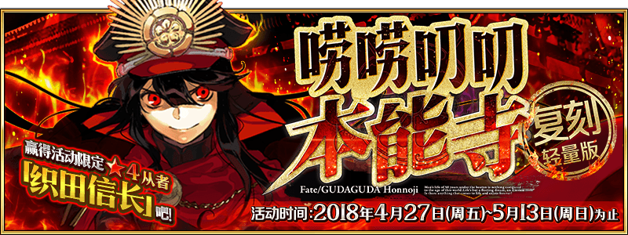

-
- ★☆★
- 引用本站的翻譯請註明本站名稱或網址
本站不像其他網站可以分工合作統整資料
而是獨自一人憑藉熱忱製作分享
引用本站的翻譯請註明本站名稱或網址
-
- ★☆★
- 本週Master任務(5/6 23:00～5/13 22:59)
任務 獎勵 No.1：通過這週全部的Master任務 x3No.2：執行30次友情點數召喚 x3No.3：擊倒30名敵人(Servant及一部份Boss除外) x3No.4：擊倒任15名『Saber』『Archer』『Lancer』職階的敵人(Servant及一部份Boss除外) x3No.5：擊倒任15名『Rider』『Caster』『Assassin』職階的敵人(Servant及一部份Boss除外) x3No.6：擊倒任15名『Berserker』職階的敵人(Servant及一部份Boss除外) x3No.7：編入1位以上『Caster』職階的Servant，通過5次任意關卡 x3
- ★☆★
- 【重要】Ver.1.11.0以後，關於從推薦環境以外的遊玩
-
- ★☆★
- 繁中(魔法少女)/簡中(復刻本能寺)活動資訊頁面
測試頁面，不保證其後之維護
可在過去活動翻譯公告的活動概要區找到右側圖示連結到已建立的活動資訊頁面


 


- 9/27
- 【重要】關於於iOS 11的應用程式更新
- 4/10
- 【來自迦勒底廣報局】Fate/Grand Order 迦勒底放送局SP Fate/Apocrypha特別活動舉辦記念舞台的告知
☛「Lostbelt No.1」新登場Servant未隱藏真名
- 5/11
- 期間限定活動「虛月館殺人事件」


| ・5/11遊戲更新(17:00實施) |
◆活動相關◆
- 4/29
- 期間限定Fate/Apocrypha×Fate/Grand Order特別活動「Apocrypha/Inheritance of Glory」


| ・在「迦勒底放送局SP Fate/Ap特別活動記念」發表的新情報 | ・關於能用5月交換券(2018)交換的道具 | |||
| ・4/25維修公告(12:00實施) | ・4/27程式更新(Ver.1.39.1) | ・4/28程式更新(Ver.1.39.2) | ・4/29遊戲更新(19:00實施) | |
| ・4/30遊戲更新(23:00實施) | ・5/9遊戲更新(17:00實施) | |||
◆Servant◆
・新增技能解放


・新增寶具解放

・新增Servant


◆概念禮裝◆
・新增寶具解放
・新增Servant
・新增概念禮裝


◆隱藏數值◆
・新增敵人


◆活動相關◆
| 官方推特 |
|